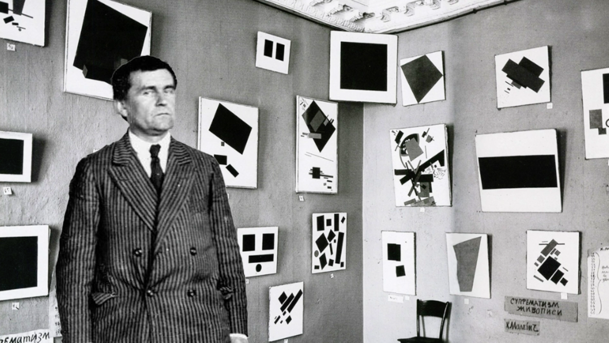
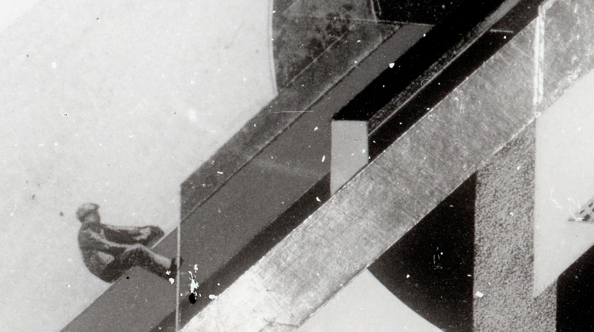
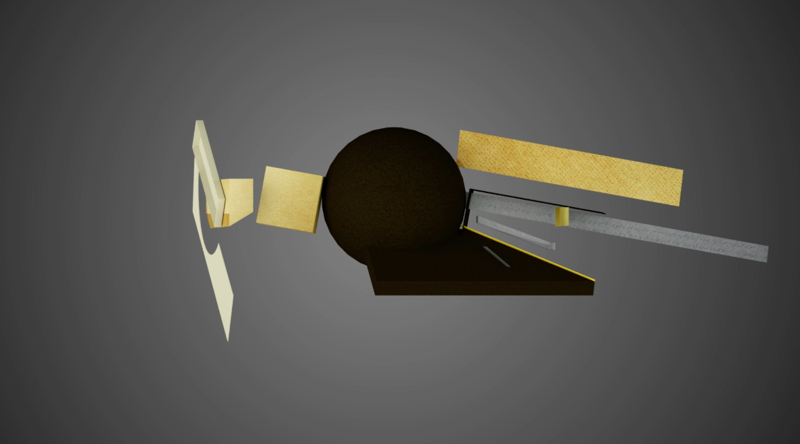

Here is a 3D model of Klutsis' 'Dynamic City.' Observing it from different angles reveals various ideas that were crucial for the author.

At the core of the 'Dynamic City' lies the concept of depicting a planet drifting through space, where different minimalist planes intersect the sphere to convey messages associated with the possibilities of new technological advancements.

Klutsis initially painted the first version of the 'Dynamic City' on a wooden board intended for traditional icon painting.

As a staunch communist, Klutsis viewed religion as a relic of the old world that needed to be eradicated, replaced by a new, modern world with open technological and educational horizons, founded on principles of equality and respect for the working class.

When Kazimir Malevich first introduced his 'Black Square,' he placed it in the corner between two walls, similar to how an icon is placed in Orthodox homes.
Later, Malevich created the Triptych: Black Square, Black Circle, and Black Cross. The Black Circle serves as the basis for Klutsis' painting, the 'Dynamic City.'

This project laid the foundation for photomontage in the USSR, as Klutsis used this technique in the later versions of the 'Dynamic City.'
You can rotate the 'Dynamic City' model yourself and perhaps discover new perspectives and meanings within it.
